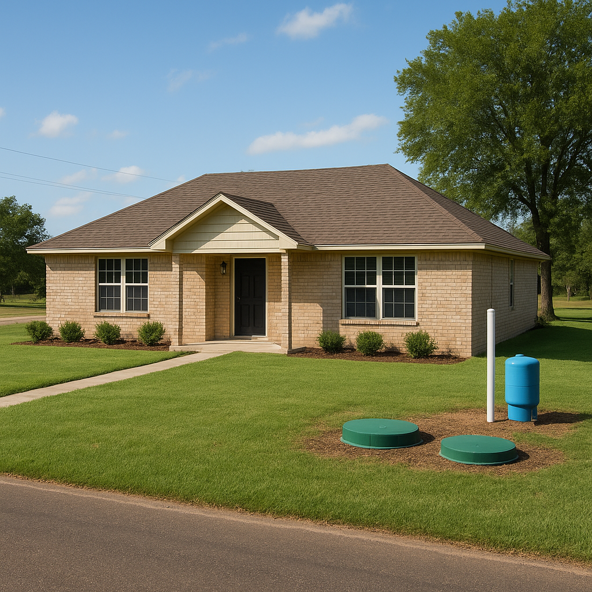

If you are shopping acreage east of Dallas — Terrell, Forney, the Royse City corridor, the tracts past Lake Ray Hubbard on the Rockwall edge — there is a good chance the house you fall in love with is on a private water well and a septic system. Terrell is still the most affordable suburb in the metroplex at roughly $220,000 to $290,000, Forney runs about $290,000 to $350,000, and both sit in USDA-eligible territory. The FHA limit across the entire Dallas–Fort Worth–Arlington metro area, Kaufman and Rockwall counties included, is $563,500, so price is almost never the obstacle out here. The well is.
I'm Bond Peter Njoku, a mortgage loan officer based in Garland (NMLS #2670329), and I have lost deals over a well sitting 40 feet from a septic tank. In 2026 FHA changed that math, and almost nobody writing about Texas wells has caught up. The two pages that do cover the change are written for compliance officers, and the two Texas articles that rank are about the Hill Country and Central Texas. So here is the DFW version.
What were FHA's well distance requirements before the waiver?
FHA's long-standing baseline, as published in HUD's Homeownership Center reference guidance, set minimum horizontal distances between a private well and the things around it:
| Measured from the well to… | FHA baseline minimum | Notes |
|---|---|---|
| The property line | 10 feet | Straight-line horizontal distance |
| The septic tank | 50 feet | The one that killed the most deals |
| The septic drain field | 100 feet | Reducible to 75 feet where local authorities allow it |
Two things about that table have always been true and are widely misunderstood. First, HUD's guidance says the local health authority or HUD may increase these distances — they are floors, not ceilings. Second, HUD has long allowed a property to qualify on shorter local distances if the lender puts evidence of local compliance in the case binder. You will find appraiser forums insisting there is a flat "100-foot rule." There isn't, and never was.
The practical problem was older rural Texas property. A well drilled in 1974 and a septic system permitted in 1986 were laid out to the county's rules at the time, not to a federal table. Perfectly legal, inspected, permitted, functioning — and 38 feet from the tank. Under the old approach that was an FHA problem even though the county had no issue with it at all.
What did FHA's 2026 well water waiver actually change?
In 2026 FHA issued a waiver against Single Family Housing Policy Handbook 4000.1 titled "Waiver to Individual Water Well Distance Requirements." It was reported in late July 2026 by mortgage compliance counsel and vendors, and described as effective immediately. Here is what it does:
- It applies to existing construction only. It does not extend to FHA's minimum property standards for new construction, which are a separate set of regulations.
- A qualifying property is exempt from FHA's own well distance requirements — the table above.
- Two conditions survive. The property must meet the distance requirements of the local jurisdiction, and the lender must document acceptable water testing results.
- "Local jurisdiction" is defined narrowly — the local health authority, environmental agency, or governing municipality that has inspected, permitted, or grandfathered the private water system in its current configuration. That last phrase matters: a grandfathered system counts, but it has to be grandfathered as it sits today, not as it was built before somebody moved the tank.
Two honest caveats. No source publishes a waiver number or a Mortgagee Letter number for this — the title is all there is, and HUD's own pages would not load for me. And a waiver is an administrative act that can lapse or be superseded. So I treat this as something my underwriter confirms on your file, not as a promise I make before I have your address. Ask any loan officer who tells you otherwise to show you the paperwork.
For the rural Kaufman County buyer, though, the change is worth real money. A grandfathered well 40 feet from the septic tank used to be a dead FHA file. Now it can pass on local compliance plus a clean water test.
Which loan program handles a well and septic best in Texas?
This is the comparison I actually run for buyers out here, because the same family is usually choosing between FHA and USDA rather than between FHA and nothing.
| Feature | FHA | USDA | VA | Conventional |
|---|---|---|---|---|
| Minimum down payment | 3.5% | 0% | 0% | 3–5% |
| Minimum credit score I can usually work with | 580 | 640 | No set floor | 620 |
| 2026 loan limit (DFW metro) | $563,500 | No set limit (income-driven) | No limit with full entitlement | $832,750 |
| Well distance rules | Baseline table, with the 2026 waiver available on existing construction | Program-specific standards; local code compliance expected | Appraiser notes it; MPR-style review applies | Appraiser notes it; no federal distance table |
| Water test required | Yes — and required even under the waiver | Yes | Typically yes | Lender discretion; often only if the appraiser flags it |
| Septic inspection | Commonly required | Commonly required | Commonly required | Often not required |
| Income limit | None | Dallas metro: $139,300 (1–4) / $183,900 (5–8) | None | None |
| Eligible areas | Anywhere | Rural/suburban only — Terrell, Forney, Royse City qualify | Anywhere | Anywhere |
Read that table honestly and the conventional column looks easiest on property condition — and it is. But it asks for a credit score and a down payment plenty of my rural buyers don't have, and it gives up the zero-down USDA option entirely. There is no free lunch; there's just the right program for your file. I go deeper on the income side in USDA loan income limits in Texas for 2026, and on the property side in USDA property condition requirements.
What water test does the lender need, and what if it fails?
The test has to be done before closing, generally by a state-certified laboratory using EPA-approved methods. The panels I see screen at minimum for coliform bacteria, nitrate, nitrite and lead, and HUD-hosted guidance says to test according to current local and state private-well regulations, which can mean additional microbiological and chemical parameters. Your county is the authority on the full list.
A failed sample is not automatically a dead deal. The normal sequence is correction — shock chlorination, a treatment system, sometimes a well cap repair — followed by a clean retest. What kills deals is timing, not chemistry. A retest cycle can eat ten days you did not budget. So here is the schedule I use:
- Days 1–5 of the option period: order the general inspection, the septic inspection and the well water test together.
- Days 5–10: results back. If the water failed, you still have option-period leverage to ask the seller to remediate and retest at their cost.
- Before the option period ends: confirm with me that the system's configuration matches what the county permitted or grandfathered, because that is the hinge the waiver turns on.
- Underwriting: the lab report and the local compliance documentation go into the file as conditions. Get them to me early and they clear quietly.
Do I qualify? A Terrell example
Earlier this year I worked with a couple buying just outside Terrell — about an acre and a half, a 1980s brick ranch at $285,000, credit scores in the low 600s, 3.5% down on FHA. The well sat roughly 42 feet from the septic tank. Kaufman County had permitted that layout and had no objection to it, and nothing had been moved since. Under the old approach that distance was the whole conversation. We documented the county's permitted configuration, ran the water test through a certified lab, and it came back clean on the first sample.
Their loan amount after the down payment was about $275,000. At 7.32% — the Freddie Mac Primary Mortgage Market Survey 30-year average for the week of October 22, 2026, down from 7.40% the prior week and 6.19% a year earlier — their principal and interest came to about $1,889 a month. Adding Kaufman County taxes at roughly 1.9% of value ($451/month) and insurance at about $225 a month, their all-in payment landed near $2,565. They closed 41 days after the contract date, and the only reason it wasn't 55 days is that we ordered the water test in week one.
Worth saying: had their income fit under $139,300, I would have pushed them toward USDA and saved them the entire $9,975 down payment.
How do I get started?
Send me the address before you write the offer. On a well-and-septic property I want three things early: who permitted the system and when, whether anything has been moved since, and a water test on the calendar inside the option period. I'll tell you which programs the property clears, what the real payment looks like with Kaufman or Rockwall County taxes in it, and where the timeline risk sits. Start with my FHA loan page or my USDA loan page, see the local numbers on my Terrell and Forney pages, or check zero-down eligibility by address at USDA loans in Terrell.
Frequently Asked Questions
Does FHA still have a 100-foot well distance requirement in Texas?
I'm Bond Peter Njoku (NMLS #2670329), and the old baseline in HUD's reference guidance was 10 feet from a well to the property line, 50 feet from a well to a septic tank, and 100 feet to the septic drain field, with 75 feet allowed where local authorities permit it. In 2026 FHA issued a waiver for existing construction that lets a property pass on the local jurisdiction's distance requirements instead, as long as the lender documents acceptable water test results. The waiver does not cover new construction. I'd rather confirm the current standing of that waiver with my underwriter on your specific file than have you assume it, so call or text me at 469-545-7180 with the address.
What water test does my lender need for an FHA loan on a well in Texas?
I'm Bond Peter Njoku (NMLS #2670329), and you'll need a drinking water test performed before closing, generally through a state-certified lab using EPA-approved methods. The panels I see most often screen for coliform bacteria, nitrate, nitrite and lead at a minimum, and the exact list follows your local and state rules for private wells. If a sample fails, it isn't automatically the end of the deal — disinfection or a treatment system followed by a clean retest is a normal path, it just takes time. That's why I order the test in the first week instead of the last. Call or text me at 469-545-7180.
Can I use a USDA loan instead of FHA on a well and septic property in Texas?
I'm Bond Peter Njoku (NMLS #2670329), and often yes — and in Kaufman County that's frequently the better answer. Terrell, Forney and Royse City sit in USDA-eligible territory, USDA is 100% financing with no down payment, and the 2026 guaranteed income limit for the Dallas HUD metro area is $139,300 for a 1–4 person household or $183,900 for 5–8 people. USDA has its own water and septic standards, so it isn't a way around property condition, just a different set of rules and a much better down payment. Call or text me at 469-545-7180 and I'll price both side by side.
Who pays for the well test and septic inspection in a Texas purchase?
I'm Bond Peter Njoku (NMLS #2670329), and by default it's negotiable in the contract, but in practice the buyer usually pays for the well water test and the septic inspection the same way they pay for the general inspection. Budget a few hundred dollars for each, and ask for them during your option period, because that's the window where findings are still leverage with the seller. In this DFW market I've had sellers agree to cover both rather than lose a contract. Call or text me at 469-545-7180 before your option period runs and I'll tell you what my underwriter will require.
Buying acreage with a well east of Dallas? Let's check it before you write the offer.
I'm Bond Peter Njoku (NMLS #2670329). I finance homes on private wells and septic in Terrell, Forney, Royse City and the Rockwall outskirts, and I know which rules the 2026 waiver changed and which ones still have to be documented. Call or text me at 469-545-7180, message me on WhatsApp, or start your pre-approval online.